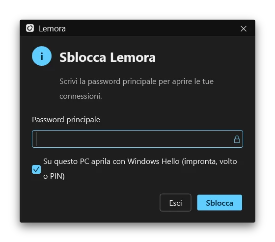
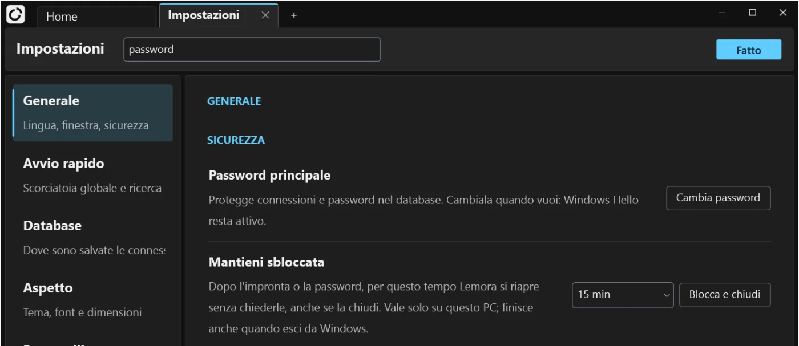
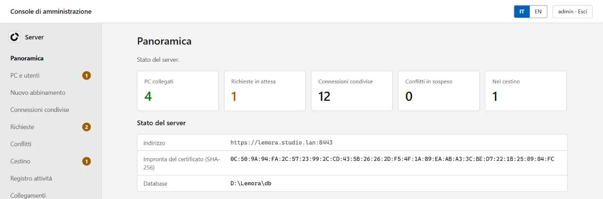

- Lemora
- Sicurezza
Cosa è cifrato, con quale chiave, dove
Una sezione per ogni parte: il programma, il server, l'estensione, Claude, gli aggiornamenti.
- Cifratura
- AES-256-GCM
- Chiave
- PBKDF2-SHA256 · 600.000 passaggi
- Sblocco
- password principale · Windows Hello
- Firma
- ECDSA P-256
Dove stanno i dati
Un solo database cifrato, sul PC. Impostazioni, posizioni delle finestre e abbinamenti stanno nello stesso archivio: nessun file sparso.
| Modo | Cosa esce dal PC |
|---|---|
| Portatile | Solo il controllo delle versioni nuove |
| Locale | Solo il controllo delle versioni nuove |
| Teams | Sincronizzazione con il server dell'azienda, in HTTPS, e controllo delle versioni |
Archivio cifrato
- Algoritmo
- AES-256-GCM sulle righe intere di connessioni e credenziali: nomi, indirizzi, utenti e password.
- Chiave
- Una chiave dei dati casuale, chiusa con una chiave derivata dalla password principale (PBKDF2-SHA256, 600.000 passaggi).
- Senza DPAPI
- La protezione di Windows legata all'account non è usata: un amministratore del PC o del dominio non apre l'archivio senza la password principale.
- Nessuna porta di servizio
- Senza password principale o Windows Hello nessuno apre l'archivio, nemmeno chi ha scritto il programma.

Sblocco, verifiche, appunti
- Windows Hello
- Impronta, volto o PIN al posto della password principale. La chiave sta nel TPM del PC, una per ogni coppia di PC e utente.
- Verifica prima di mostrare
- Per vedere o copiare la password di una connessione si chiede Hello o la password di Windows. Attiva per impostazione predefinita, si spegne dalle impostazioni.
- Linguetta Password
- Durante una sessione la copia delle password dei dispositivi è immediata: l'archivio è già aperto e gli appunti si svuotano da soli.
- Appunti a tempo
- Una password copiata viene tolta dagli appunti dopo 30 secondi ed esclusa dalla cronologia di Win+V e dagli appunti nel cloud.
- Mantieni sbloccata
- Dopo l'impronta o la password, per il tempo scelto Lemora si riapre senza chiederle, anche se chiusa. Vale solo su quel PC e finisce uscendo da Windows. "Blocca e chiudi" la richiude subito.

Connessioni
- Certificati e impronte
- Lemora ricorda il certificato RDP e l'impronta dei server SSH e SFTP, per ogni connessione. Se cambiano, avvisa prima di mandare le credenziali.
- Server RDP datati
- Con un TLS vecchio chiede prima di abbassare la sicurezza; la scelta "sempre" resta legata a quel certificato.
- FreeRDP
- I parametri arrivano da una variabile d'ambiente del processo: la password non compare mai nella riga di comando. Il processo termina insieme a Lemora.
- Importazione
- Programmi locali, gateway e file di sessione indicati da un file importato si vedono e si approvano prima dell'uso.
- Database aggiuntivi
- Per MySQL e PostgreSQL l'impronta del certificato del server viene ricordata.
Server Teams
Le password sul server sono cifrate con una chiave tenuta fuori dal database.
| Dato | Protezione |
|---|---|
| Password delle voci | AES-256-GCM, legate all'identificativo della voce. Chiave casuale in server.key, fuori dal file del database. |
| Nomi, indirizzi, utenti, cartelle, registro | Database SQLite in una cartella accessibile solo a SYSTEM, agli amministratori e al servizio su Windows; permessi 700 su Linux. |
| Traffico | HTTPS con certificato autofirmato; il client ne pretende l'impronta vista al primo collegamento. |
| Sui PC del team | Le password arrivano dentro HTTPS e finiscono nella copia locale cifrata (S.2). |
| Console | Le password delle connessioni solo con "Mostra", che finisce nel registro. Quelle di cartella e dei dispositivi mai. |


Claude
Il server MCP è spento finché non lo si accende da Impostazioni › Server MCP.
- Solo questo PC
- Ascolta su
localhoste chiede un token: un altro PC della rete non lo raggiunge. - Connessioni scelte
- Claude vede solo cartelle e connessioni spuntate. Un indirizzo non salvato vale finché Lemora resta aperta.
- Niente comandi sul PC remoto
- Nessuno strumento esegue script o PowerShell sul PC del cliente. Claude lavora solo dall'interfaccia, come una persona.
- Mouse e tastiera
- Clic e tasti arrivano alla finestra della sessione. Il puntatore del PC locale non si muove.
- File
- Ogni trasferimento con
invia_fileoprendi_filechiede conferma all'utente. - Fermarlo
- Un riquadro spostabile sopra la sessione mette in pausa o ferma Claude.
Estensione del browser
Nessun account, nessun archivio proprio, nessuna statistica. Parla solo con Lemora sullo stesso PC, attraverso il canale locale del browser (native messaging).
- 1Browserriconosce la pagina del dispositivo
- 2Lemora sullo stesso PCsolo l'estensione abbinata
- 3Archivio cifratopassword principale o Windows Hello
- ×Internet, cloudnon coinvolti
Cosa vede
- L'indirizzo della pagina aperta, per trovare le voci giuste.
- Le password dei dispositivi, mai quelle delle connessioni.
- La password solo al clic su Compila o Copia.
Come si difende
- Abbinamento confermato in Lemora; nell'archivio resta solo l'hash del codice.
- Chiave legata al browser, valida 90 giorni; conferma di identità ogni 20 minuti.
- Compila solo campi visibili e non coperti, mai nei riquadri di altri siti, mai da pagine https verso http.
Aggiornamenti
Pacchetti firmati, verificati prima dell'installazione e installati accanto alla versione in uso.
- Firma
- Ogni pacchetto è firmato con ECDSA P-256 e verificato due volte prima dell'installazione. Un pacchetto che non torna viene cancellato.
- Versioni affiancate
- La versione nuova si installa accanto a quella in uso; il passaggio avviene al riavvio.
- Quando
- All'apertura della finestra, mai durante l'avvio nel vassoio. Il riavvio lo decide l'utente.
- Impronta
- Ogni versione pubblicata su questo sito ha la sua impronta SHA-256, da confrontare con quella del file scaricato.
Revisioni del codice
Otto revisioni di sicurezza del codice fino a novembre 2026, con un metodo strutturato: confini di fiducia, prova di ogni ipotesi, intervento e nuova verifica.
- Dopo l'ultima revisione nessun problema aperto.
- Protezioni nate dalle revisioni: controllo dei file all'importazione (S.4), password mai sulla riga di comando di FreeRDP, regole di compilazione dell'estensione (S.7), appunti svuotati dopo 30 secondi.